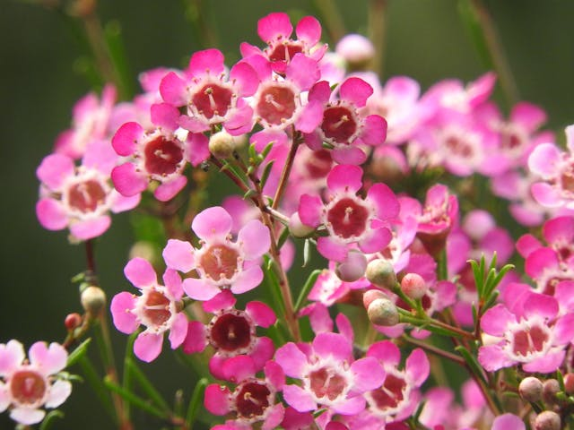
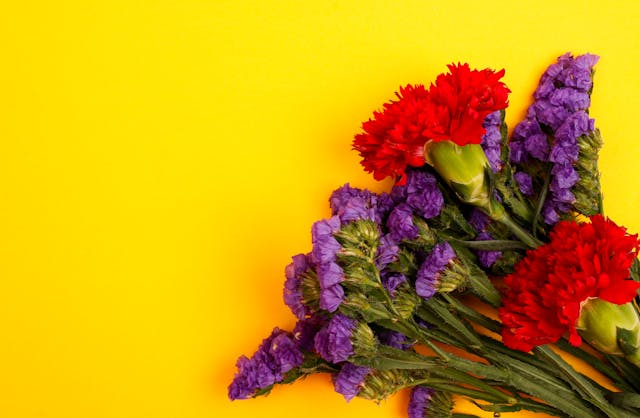
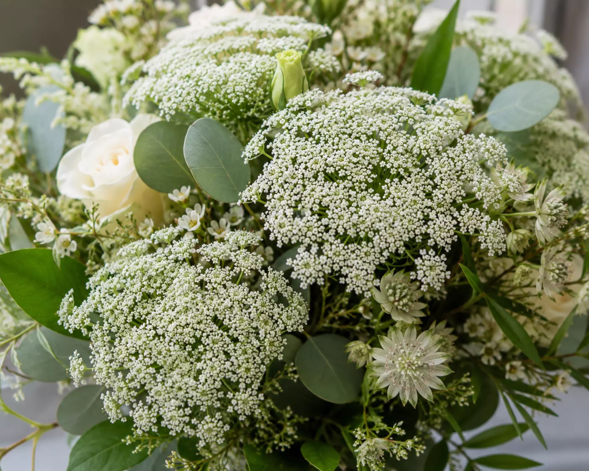

For decades, Gypsophila—commonly known as Baby's Breath—has been the undisputed king of filler flowers. It is affordable, voluminous, and classic. But as event floral design evolves toward more organic, textured, and sophisticated aesthetics, relying solely on Gypsophila can make an arrangement feel dated.
The right filler flower does more than just "fill space." It adds texture, bridges color palettes, and creates structure. Here are three incredible alternative filler flowers that can bulk up your arrangements beautifully, affordably, and give your decor a fresh, modern edge.
1. Waxflower (Chamelaucium)

If you need longevity and a delicate, romantic texture, Waxflower is an exceptional choice. Native to Australia, these tiny, five-petaled blooms feel almost like they are made of wax, hence the name. They are clustered along woody stems with fine, needle-like foliage.
- Visual Style: Delicate, rustic, and whimsical. Great for boho weddings and garden-style centerpieces.
- Colors: White, pale pink, deep purple, and magenta.
- Why we love it: The crushed leaves release a pleasant citrus scent. It also has a phenomenal vase life, easily lasting up to two weeks, making it ideal for multi-day events.
2. Statice (Limonium sinuatum)

When you need to introduce vivid color and stiff, architectural structure, Statice is unparalleled. Often called "sea lavender," statice features papery, funnel-shaped calyxes that hold tiny white flowers inside.
- Visual Style: Bold, textural, and slightly stiff. Perfect for structural arches and vibrant stage setups.
- Colors: Incredible range including deep purple, blue, yellow, pink, peach, and white.
- Why we love it: Statice holds its color and shape beautifully even when completely dry. It is highly cost-effective for large-scale installations and brings an energetic pop of color that baby's breath cannot provide.
3. Queen Anne's Lace (Ammi majus)

For a soft, airy, and "fresh-from-the-meadow" look, Queen Anne's Lace is the ultimate luxury filler. Its umbrella-like clusters of tiny white flowers float above arrangements, adding a graceful, dancing quality.
- Visual Style: Ethereal, organic, and elegant. A staple in luxury, fine-art floral design.
- Colors: Crisp white with green undertones (and there is a chocolate/burgundy variety called Daucus carota 'Dara').
- Why we love it: It provides the same cloud-like volume as Gypsophila but with a much more sophisticated, natural silhouette. It breaks up heavy focal flowers (like large roses or peonies) perfectly.
Rethinking Bulk Sourcing
Choosing alternatives to Baby's Breath doesn't have to break your budget. When purchased wholesale, Waxflower, Statice, and Queen Anne's Lace offer excellent value. Because they offer unique textures, you often need fewer stems to create high visual impact compared to packing a vase tightly with standard fillers.
Next time you are planning the floral recipe for a wedding or corporate gala, look beyond the gypsophila. Introduce a new texture—your designs will immediately feel more thoughtful, modern, and elevated.
Ready to explore unique filler flowers for your next large event?
Fleur Vine supplies premium, farm-fresh Waxflower, Statice, and seasonal fillers in bulk to decorators and planners across India.